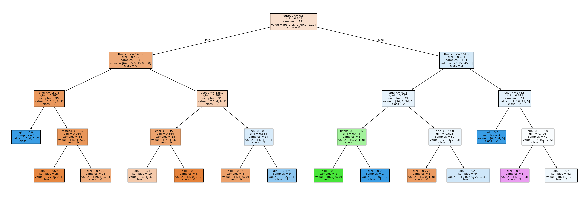

## library imports here
import pandas as pd
import numpy as np
from sklearn.model_selection import train_test_split
from sklearn.preprocessing import StandardScaler
from sklearn.neighbors import KNeighborsClassifier
from sklearn.tree import DecisionTreeClassifier, plot_tree
from sklearn.discriminant_analysis import LinearDiscriminantAnalysis
from sklearn.metrics import accuracy_score
from sklearn.compose import ColumnTransformer
from sklearn.pipeline import PipelineOur dataset consists of clinical data from patients who entered the hospital complaining of chest pain (“angina”) during exercise. The information collected includes:
age: Age of the patientsex: Sex of the patientcp: Chest Pain type- Value 0: asymptomatic
- Value 1: typical angina
- Value 2: atypical angina
- Value 3: non-anginal pain
trtbps: resting blood pressure (in mm Hg)chol: cholesterol in mg/dl fetched via BMI sensorrestecg: resting electrocardiographic results- Value 0: normal
- Value 1: having ST-T wave abnormality (T wave inversions and/or ST elevation or depression of > 0.05 mV)
- Value 2: showing probable or definite left ventricular hypertrophy by Estes’ criteria
thalach: maximum heart rate achieved during exerciseoutput: the doctor’s diagnosis of whether the patient is at risk for a heart attack- 0 = not at risk of heart attack
- 1 = at risk of heart attack
ha = pd.read_csv("https://www.dropbox.com/s/aohbr6yb9ifmc8w/heart_attack.csv?dl=1")Q1: Natural Multiclass Models
Fit a multiclass KNN, Decision Tree, and LDA for the heart disease data; this time predicting the type of chest pain (categories 0 - 3) that a patient experiences. For the decision tree, plot the fitted tree, and interpret the first couple splits.
# Predict CP (multiclass 0–3)
X = ha.drop("cp", axis=1)
y = ha["cp"]
# Train-test split
X_train, X_test, y_train, y_test = train_test_split(
X, y, test_size=0.3, random_state=321
)
ct = ColumnTransformer(
transformers=[
("scale", StandardScaler(), ["age", "trtbps", "chol", "thalach"])
],
remainder="passthrough"
)
knn_model = Pipeline([
("preprocess", ct),
("knn", KNeighborsClassifier(n_neighbors=5))
])
knn_fit = knn_model.fit(X_train, y_train)
knn_pred = knn_fit.predict(X_test)
knn_acc = accuracy_score(y_test, knn_pred)
print("KNN Accuracy:", knn_acc)KNN Accuracy: 0.8902439024390244# Knn model with cross validation
from sklearn.model_selection import cross_val_score
# Predict CP (multiclass 0–3)
X = ha.drop("cp", axis=1)
y = ha["cp"]
ct = ColumnTransformer(
transformers=[
("scale", StandardScaler(), ["age", "trtbps", "chol", "thalach"])
],
remainder="passthrough"
)
knn_model = Pipeline([
("preprocess", ct),
("knn", KNeighborsClassifier())
])
# 5-fold Cross-Validation
knn_cv_scores = cross_val_score(
knn_model,
X,
y,
cv=5,
scoring="accuracy"
)
print("KNN Mean CV Accuracy:", knn_cv_scores.mean())KNN Mean CV Accuracy: 0.9008080808080807dt_model = DecisionTreeClassifier(
max_depth=4,
random_state=321
)
dt_fit = dt_model.fit(X_train, y_train)
dt_pred = dt_fit.predict(X_test)
dt_acc = accuracy_score(y_test, dt_pred)
print("Decision Tree Accuracy:", dt_acc)Decision Tree Accuracy: 0.4878048780487805import matplotlib.pyplot as plt
plt.figure(figsize=(30,10))
plot_tree(dt_fit, filled=True, feature_names=X.columns, class_names=['0','1','2','3'])
plt.show()
Root split: - output <= 0.5 -> this is the doctors diagnosis of heart attack risk (1,0) - Left branch, patient not at risk (0) - Right branch, patient is at risk (1)
Second split (left side): - among patients not at risk, the next most important variable is thalach (max. heart rate during exercise) - For patients not diagnosed as high-risk, chest pain type is further separated based on exercise heart rate. - Lower max heart rate values (≤ 146.5) go one way, while higher values go another. - This suggests that exercise-induced heart rate response is an important secondary signal for differentiating types of angina in lower-risk patients.
lda_model = Pipeline([
("preprocess", ct),
("lda", LinearDiscriminantAnalysis())
])
lda_fit = lda_model.fit(X_train, y_train)
lda_pred = lda_fit.predict(X_test)
lda_acc = accuracy_score(y_test, lda_pred)
print("LDA Accuracy:", lda_acc)LDA Accuracy: 0.6341463414634146#lda with cv
lda_cv_scores = cross_val_score(
lda_model,
X,
y,
cv=5,
scoring="accuracy"
)
print("LDA Mean CV Accuracy:", lda_cv_scores.mean())LDA Mean CV Accuracy: 0.5424242424242424print("Model Accuracy Summary")
print("----------------------")
print("KNN Accuracy:", round(knn_acc, 2))
print("Decision Tree Accuracy:", round(dt_acc,2))
print("LDA Accuracy:", round(lda_acc, 2))Model Accuracy Summary
----------------------
KNN Accuracy: 0.51
Decision Tree Accuracy: 0.49
LDA Accuracy: 0.63Q2: OvR
Create a new column in the ha dataset called cp_is_3, which is equal to 1 if the cp variable is equal to 3 and 0 otherwise.
Then, fit a Logistic Regression to predict this new target, and report the F1 Score.
Repeat for the other three cp categories. Which category was the OvR approach best at distinguishing?
from sklearn.linear_model import LogisticRegression
from sklearn.metrics import f1_score
# Make binary columns for each cp category
ha["cp_is_0"] = (ha["cp"] == 0).astype(int)
ha["cp_is_1"] = (ha["cp"] == 1).astype(int)
ha["cp_is_2"] = (ha["cp"] == 2).astype(int)
ha["cp_is_3"] = (ha["cp"] == 3).astype(int)
# Feature matrix (use all other columns except cp and new binary columns)
X = ha.drop(["cp", "cp_is_0", "cp_is_1", "cp_is_2", "cp_is_3"], axis=1)
# Prepare train-test split
X_train, X_test, y_train, y_test = train_test_split(
X, ha["cp_is_3"], test_size=0.3, random_state=321
)
# Example model for cp == 3
log_reg = LogisticRegression(max_iter=1000)
log_reg.fit(X_train, y_train)
pred3 = log_reg.predict(X_test)
f1_cp3 = f1_score(y_test, pred3)
print("F1 Score for cp == 3:", f1_cp3)F1 Score for cp == 3: 0.0f1_scores = {}
for cp_value in [0, 1, 2, 3]:
y = ha[f"cp_is_{cp_value}"]
X_train, X_test, y_train, y_test = train_test_split(
X, y, test_size=0.3, random_state=321
)
model = LogisticRegression(max_iter=1000)
model.fit(X_train, y_train)
preds = model.predict(X_test)
score = f1_score(y_test, preds)
f1_scores[f"cp == {cp_value}"] = score
f1_scores{'cp == 0': 0.8, 'cp == 1': 0.1111111111111111, 'cp == 2': 0.0, 'cp == 3': 0.0}The OvR was best at distinguishing cases where cp=0
Q3: OvO
Reduce your dataset to only the 0 and 1 types of chest pain.
Then, fit a Logistic Regression to predict between the two groups, and report the ROC-AUC.
Repeat comparing category 0 to 2 and 3. Which pair was the OvO approach best at distinguishing?
from sklearn.metrics import roc_auc_score
from sklearn.linear_model import LogisticRegression
# Subset to cp = 0 and cp = 1
ha_01 = ha[ha["cp"].isin([0, 1])].copy()
# Binary target: 0 stays 0, 1 stays 1
X = ha_01.drop("cp", axis=1)
y = ha_01["cp"]
X_train, X_test, y_train, y_test = train_test_split(
X, y, test_size=0.3, random_state=321
)
logreg_01 = LogisticRegression(max_iter=1000)
logreg_01.fit(X_train, y_train)
# Need probabilities for AUC
probs_01 = logreg_01.predict_proba(X_test)[:, 1]
auc_01 = roc_auc_score(y_test, probs_01)
auc_01np.float64(1.0)# Subset to cp = 0 and cp = 2
ha_02 = ha[ha["cp"].isin([0, 2])].copy()
X = ha_02.drop("cp", axis=1)
y = ha_02["cp"]
X_train, X_test, y_train, y_test = train_test_split(
X, y, test_size=0.3, random_state=321
)
logreg_02 = LogisticRegression(max_iter=1000)
logreg_02.fit(X_train, y_train)
probs_02 = logreg_02.predict_proba(X_test)[:, 1]
auc_02 = roc_auc_score(y_test, probs_02)
auc_02np.float64(1.0)# Subset to cp = 0 and cp = 3
ha_03 = ha[ha["cp"].isin([0, 3])].copy()
X = ha_03.drop("cp", axis=1)
y = ha_03["cp"]
X_train, X_test, y_train, y_test = train_test_split(
X, y, test_size=0.3, random_state=321
)
logreg_03 = LogisticRegression(max_iter=1000)
logreg_03.fit(X_train, y_train)
probs_03 = logreg_03.predict_proba(X_test)[:, 1]
auc_03 = roc_auc_score(y_test, probs_03)
auc_03np.float64(1.0)For all three OvO comparisons (0 vs 1, 0 vs 2, 0 vs 3), the ROC-AUC was 1.0. This indicates perfect separability between chest pain type 0 and each of the other types using a logistic regression model. The result is consistent with the earlier OvR analysis, where cp = 0 had by far the highest F1 score, suggesting that asymptomatic patients (cp=0) are clinically distinct from the other chest pain categories. Logistic regression is therefore able to perfectly discriminate type 0 from all other groups.